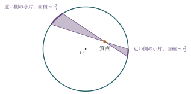
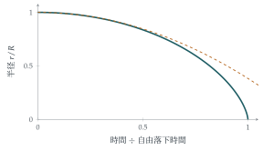

STEP III 1999、第9問
先に進む前に問題を読んでおこう。問題は STEP Support Programme の問題データベースにある： step.maths.org/questions/99-s3-q9
導入
中が空洞の惑星を想像してほしい。内部には何もなく、岩石でできた薄い球殻（spherical shell）だけがある惑星である。その内側で壁の近くに立てば、すぐそばの岩石の方へ引き寄せられると思うかもしれない。しかし実際には、体は宙に浮く。球殻の内部では、球殻による重力（gravitational pull）はどこでもちょうど \(0\) になるのである。球殻の手前側は近いが、向こう側は大きい。この二つの効果が完全に打ち消し合う。
これがニュートン（Newton）の殻定理（shell theorem）である。ニュートンはこれを証明するのに何年もかかったが、この定理は彼の重力理論に欠かせないものであった。対になる結果（球の外側では、全質量が中心に集まっているかのように引力がはたらく）と合わせると、地球や太陽を点とみなしてよいことが正当化される。演習問題と「背後にある数学」の節では、この定理を使って、ガスの雲が収縮して恒星になるまでにかかる時間を計算する。
取りかかる前に
円環上で直径の両端に位置する二つの小さな部分を考えよ。それらが質点に及ぼす力を図示せよ。どの成分が打ち消し合い、どの成分が足し合わされるか。
二つの部分は質点から等しい距離にある。それらの引力の軸方向の成分は等しく、足し合わされる。軸に垂直な成分は大きさが等しく向きが逆なので、打ち消し合う。円環全体をこのように対にしていくと、合力は軸方向で、円環の中心に向かう。
順を追って解く
段階 1 円環
円環のどの部分も質点から距離 \(\sqrt{x^2 + r^2}\) にあり、その部分へ向かう直線は軸と角 \(\psi\) をなす。ここで \(\cos\psi = \frac{x}{\sqrt{x^2 + r^2}}\) である。質量 \(\delta m\) の部分は大きさ \(\frac{G\,\delta m}{x^2 + r^2}\) の力で引き、そのうち軸方向の成分は \(\frac{G\,\delta m}{x^2 + r^2}\cdot\frac{x}{\sqrt{x^2 + r^2}}\) である。どの部分も距離と角が同じなので、これらの成分を単純に足し合わせると \[\frac{Gmx}{(x^2 + r^2)^{3/2}}. \qed\] となる。
段階 2 球殻を円環に切り分ける
球殻の中心を \(O\) とし、質点を軸上で \(O\) から距離 \(b\) の位置に置く。球殻を軸に垂直な薄い円環に切り分け、各円環を、その上の点が \(O\) において軸となす角 \(\phi\) で表す。円環の半径、位置、質量はそれぞれいくらか。
角 \(\phi\) の円環の半径は \(a\sin\phi\) であり、その中心は軸に沿って \(O\) から距離 \(a\cos\phi\)、したがって質点から距離 \(a\cos\phi - b\) の位置にある。幅は \(a\,\delta\phi\) なので、面積は \(2\pi a\sin\phi \cdot a\,\delta\phi\) であり、これは球殻の面積 \(4\pi a^2\) の \(\frac12\sin\phi\,\delta\phi\) 倍にあたる。よって質量は \(\frac12M\sin\phi\,\delta\phi\) である。段階 1 より、この円環は質点を軸に沿って \(\phi = 0\) の端の方へ、大きさ \[\frac{G\cdot\frac12M\sin\phi\,\delta\phi\,(a\cos\phi - b)}{\bigl((a\cos\phi - b)^2 + a^2\sin^2\phi\bigr)^{3/2}} = \frac{GM}{2}\cdot\frac{(a\cos\phi - b)\sin\phi\,\delta\phi}{(a^2 - 2ab\cos\phi + b^2)^{3/2}}.\] の力で引く。（符号は自動的に正しく処理される。質点より先にある \(a\cos\phi > b\) の円環は一方の向きに引き、質点より後ろにある円環は逆の向きに引く。）
段階 3 適切な変数
分母には \(s^2 = a^2 - 2ab\cos\phi + b^2\) が含まれる。\(s\) は幾何学的に何を表すか。\(\mathrm{d}s\) を \(\mathrm{d}\phi\) で表すとどうなるか。
余弦定理（cosine rule）より、\(s\) は質点から円環までの距離である。微分すると \(2s\,\mathrm{d}s = 2ab\sin\phi\,\mathrm{d}\phi\) となり、\(s^2 = a^2 - 2ab\cos\phi + b^2\) を \(a\cos\phi\) について解くと \(a\cos\phi - b = \frac{a^2 - b^2 - s^2}{2b}\) を得る。よって力の総和は \[\frac{GM}{2}\int \frac{a^2 - b^2 - s^2}{2b\,s^3}\cdot\frac{s\,\mathrm{d}s}{ab} = \frac{GM}{4ab^2}\int_{a - b}^{a + b}\Bigl(\frac{a^2 - b^2}{s^2} - 1\Bigr)\mathrm{d}s,\] である。ここで \(s\) は \(a - b\)（最も近い点、\(\phi = 0\)）から \(a + b\)（最も遠い点、\(\phi = \pi\)）まで動く。
段階 4 力は消える
\[\int_{a-b}^{a+b}\Bigl(\frac{a^2 - b^2}{s^2} - 1\Bigr)\mathrm{d}s = (a^2 - b^2)\Bigl(\frac{1}{a - b} - \frac{1}{a + b}\Bigr) - 2b = (a^2 - b^2)\cdot\frac{2b}{a^2 - b^2} - 2b = 0.\] 球殻は質点に力を及ぼさない。■
質点が球殻の外側にあり、\(b > a\) のときは何が変わるか。\(s\) の範囲の端は \(b - a\) と \(b + a\) になる。最後の行を計算し直し、力が中心に向かう大きさ \(\frac{GM}{b^2}\) の力になること、すなわち全質量が中心に集中しているかのようになることを示せ。
振り返り
まず対称性。向かい合う部分を対にすることで、計算する前に力の向きがわかった。
より単純な形から組み立てる。点から円環を作り、円環から球殻を作った。
物理に合った変数を選ぶ。角 \(\phi\) から距離 \(s\) に変数を変えたことで、扱いにくい積分が自明な積分になった。
背後にある数学
ニュートンの円錐による議論
ニュートン自身の証明（プリンキピア、第 I 巻、命題 70）は積分をまったく使わない。質点を頂点とする細い二重円錐を描き、球殻を二つの小片で切り取る（図 10.7.1）。小片の面積は、質点からの距離の 2 乗 \(r_1^2\) と \(r_2^2\) に比例する（弦は両端で円と等しい角をなすので、二つの小片は円錐と等しい角をなす）。したがって小片の質量は \(r_1^2\) と \(r_2^2\) に比例し、質量を距離の 2 乗で割ったものに比例する引力は、大きさが等しく向きが逆になる。質点を通るどの二重円錐でも打ち消し合うので、力の総和は \(0\) である。この打ち消し合いを成り立たせているのは、まさに逆二乗則（inverse-square law）である。距離のほかのべきであれば、球殻は質点を押すか引くかすることになる。

収縮する雲
STEP III 1987 Q14 は、この定理を逆向きに使う。一様な球の外側では、表面にある質点にはたらく引力は、全質量が中心にあるかのように \(GMm/r^2\) である。いま、半径 \(R\)、質量 \(M\) の一様な球状の塵の雲が静止しているとし、それが自身の重力で収縮するとする。表面の質点が感じるのはその内側の質量だけであり、すべてが内側へ落ちていく間それは \(M\) のままである。よって内向きの速さ \(v = -\dot r\) は \[v\frac{\mathrm{d}v}{\mathrm{d}r} = -\frac{GM}{r^2}, \qquad\text{したがって}\qquad v^2 = 2GM\Bigl(\frac1r - \frac1R\Bigr).\] を満たす。置換（substitution）\(r = R\cos^2\alpha\)（演習問題の一つ）により、半径 \(r\) に達するまでの時間は \(\sqrt{\frac{R^3}{2GM}}\bigl(\alpha + \frac12\sin 2\alpha\bigr)\) となる。雲全体は \(\alpha = \frac\pi2\) のとき一点に収縮する。それまでの時間が自由落下時間（free-fall time） \[t_{\text{ff}} = \frac{\pi}{2}\sqrt{\frac{R^3}{2GM}} = \sqrt{\frac{3\pi}{32G\rho}},\] である。ここで \(\rho\) は密度である。驚くべきことに、時間は密度だけで決まるので、雲のどの殻も同じ瞬間に中心に達する（図 10.7.2）。1 立方メートルあたり約 \(10^{-17}\) kg の典型的な星間雲では、\(t_{\text{ff}}\) はおよそ \(700\,000\) 年である。これが恒星が形成される時間の尺度を決めている。

ニュートンは 1660 年代までに逆二乗則を得ていたが、重力理論を発表したのは 1687 年になってからであった。一部の歴史家によれば、その理由の一つは、殻定理を証明するまでは地球を質点（point mass）とみなすことを正当化できなかったことにある。それを証明してしまうと、プリンキピアの残りの部分はそこから導かれた。今日では、この定理はガウス（Gauss）の法則（Gauss’s law）から簡単に導かれる。ガウスの法則とは、任意の閉曲面を通って外へ流れ出る重力場の総量は、その内部の質量に比例する、というものである。球殻の内部に、同じ中心をもつ球面をとる。その内部には質量がないので、そこを通る流れの総量は \(0\) である。それだけでは場が \(0\) になるとはいえない（一様な場は、一方の側から流れ込み反対側から流れ出るので、どの閉曲面を通る流れの総量も \(0\) である）。しかしここでは対称性が助けになる。場は中心へまっすぐ向かうか中心からまっすぐ離れる向きであり、球面上のどこでも強さが等しくなければならない。したがって流れの総量が \(0\) ならば場も \(0\) である。同じ法則が電場も支配する。帯電した金属の殻の内部に電場がないのも、自動車が雷から人を守ってくれるのも、このためである。
思考のスキル
連続的な物体の効果を求めるには、効果がわかっている小片に切り分けて足し合わせよ。小片の選び方には対称性を使え。
点から円環ができ、円環から球殻ができ、球殻から中身の詰まった球ができる。大学では、あらゆる場（重力場、電場、磁場）がこのようにして源から計算され、それはガウスの定理やストークス（Stokes）の定理のベクトル解析へとつながっていく。
次の一歩
球殻の外側。先ほどの囲みの問いを完成させ、球殻の外側では力が \(\frac{GM}{b^2}\) であることを示せ。これより、質量 \(M\) の中身の詰まった一様な球は、外側の質点を、その質量が中心にあるかのように引くことを導け。
収縮時間。STEP III 1987、第14問 に取り組んでみよ。塵の雲が自身の重力で収縮するのにかかる時間を求める問題であり、積分は三角関数による置換で計算できる。
地球を貫くトンネル。一様な中身の詰まった球の内部で、中心から距離 \(b\) の点における力が \(\frac{GMb}{a^3}\) であり、\(b\) に比例することを示せ。これより、地球の中心を通るトンネルに落とした球は周期（period）\(2\pi\sqrt{a^3/(GM)}\)、すなわち約 \(84\) 分で振動（oscillate）することを導け。これは地表すれすれを回る人工衛星の周期と同じである。
別の力の法則。もし重力が逆三乗則に従うとしたら、球殻の内部での力はやはり \(0\) になるだろうか。（\(\frac{1}{s^2}\) の代わりに \(\frac{1}{s^3}\) として段階 3 をやり直せ。）
さらに学ぶために
Daniel Kleppner & Robert Kolenkow, An Introduction to Mechanics（Cambridge University Press）。重力を扱った章で、殻定理も含まれる。
Subrahmanyan Chandrasekhar, Newton’s Principia for the Common Reader（Oxford University Press）。命題 70 と 71 を含むニュートンの証明を、ノーベル賞受賞者が解説している。
Andrew Pontzen, The Universe in a Box（Riverhead）。重力、収縮、シミュレーションによって宇宙の構造がどのように説明されるかを述べている。